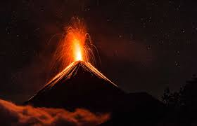

Volcanoes
How it all Starts
The first thing that happens to cause a volcanic eruption is the Earth's mantle. The mantle contains molten lava. The Earth has many pieces, like in a puzzle. They are called tectonic plates.

Why Volcanoes Erupt
Events such as tectoic plate movement or a related event such as a tsunami, lava from the mantle gradually rises into the cracks in the tectonic plates. This pressure builds up in the holes and emerges into the primary vent of a volcano. Volcanoes have one or more vents in them where lava can escape. Boom! Lava bursts out from the volcano's primary and secondary vents.

During The Eruption
During an eruption, smoke flows out, beach sand turns into a dark shade, the Volcano spews out large amounts of lava and rock that cause death and destruction.
The Aftermath
After an eruption, roofs on buildings may collapse and kill people if enough volcanic ash particles land on them. People can develop breathing problems, throat irritation and other respiratory issues when ash falls after a volcanic eruption. Volcanoes are destructive and horrific but also fascinating. Examples like Krakatau, Mont Pelée, and many more are some of the most dangerous volcanoes. When a volcano reaches a certain threshold, it is named a supervolcano. Super volcanoes are some of the most destructive things on our mother planet Earth.
Depending on the neighboring towns and cities reaction time, evacuations may commense and civiliansmay be forced to leave their homes and families. Damages are usually in the thousands to billions depending on the size of nearby populations.
The Safety Precautions in Place
In some countries with volcanic activities such as Papua New Guinea, it has a detection system on the volcano to send feedback to a nearby town which then sends it out to everyone. Some countries have experienced volcanoes so many times they just know when to leave their homes.
Learn More